- Overview
- Loading Data
- The R Language
- Statistics
- Data Visualization
- Document Preparation with R Markdown
- Advanced Statistics and Predictive Modeling
- Interactive Documents with Shiny
November 1, 2015
Agenda
Installation
Installation instructions for R are here: https://github.com/jbryer/IntroR/blob/master/Installation/Install.md
- Downlaod workshop materials here: https://github.com/jbryer/IntroR
- Download
NEAIR2015.zipto get all slides, data, and workshop template.
- Download
Overview
What is R?
"R is a language and environment for statistical computing and graphics. It is a GNU project which is similar to the S language and environment which was developed at Bell Laboratories (formerly AT&T, now Lucent Technologies) by John Chambers and colleagues…"
"R provides a wide variety of statistical (linear and non linear modeling, classical statistical tests, time-series analysis, classification, clustering, …) and graphical techniques, and is highly extensible. The S language is often the vehicle of choice for research in statistical methodology, and R provides an Open Source route to participation in that activity."
(R-project.org)
Pros
- FREE! R is available as Free Software under the terms of the Free Software Foundation's GNU General Public License in source code form. It compiles and runs on a wide variety of UNIX platforms and similar systems (including FreeBSD and Linux), Windows and MacOS.
- Available for multiple platforms (i.e. Windows, Mac, Linux).
- Easily extensible with (currently) over 2,000 packages listed on CRAN.
- Scriptable.
- Publication grade graphics.
- Multiple ways of doing the same thing.
- Quickly becoming the de facto standard among statistician.
Cons
- Has a steeper learning curve.
- Multiple ways of doing the same thing.
- Can have difficulty with very large datasets.
The Popularity of R
Firth, D (2011). R and citations. Weblog entry at URL https://statgeek.wordpress.com/2011/06/25/r-and-citations/.
See also: Muenchen, R.A. (2015). The Popularity of Data Analysis Software. Welog entry at URL http://r4stats.com/articles/popularity/
R's Roots… S
- S is a language that was developed by John Chambers and others at Bell Labs.
- S was initiated in 1976 as an internal statistical analysis environment - originally implemented as Fortran libraries.
- Early versions of the language did not contain functions for statistical modeling.
- In 1988 the system was rewritten in C and began to resemble the system that we have today (this was Version 3 of the language). The book Statistical Models in S by Chambers and Hastie (the blue book) documents the statistical analysis functionality.
- Version 4 of the S language was released in 1998 and is the version we use today. The book Programming with Data by John Chambers (the green book) documents this version of the language.
History of S
- In 1993 Bell Labs gave StatSci (now Insightful Corp.) an exclusive license to develop and sell the S language.
- In 2004 Insightful purchased the S language from Lucent for $2 million and is the current owner.
- In 2006, Alcatel purchased Lucent Technologies and is now called Alcatel-Lucent.
- Insightful sells its implementation of the S language under the product name S-PLUS and has built a number of fancy features (GUIs, mostly) on top of it-hence the "PLUS".
- In 2008 Insightful is acquired by TIBCO for $25 million; future of S-PLUS is uncertain.
- The S language itself has not changed dramatically since 1998.
- In 1998, S won the Association for Computing Machinery's Software System Award.
In "Stages in the Evolution of S", John Chambers writes:
"[W]e wanted users to be able to begin in an interactive environment, where they did not consciously think of themselves as programming. Then as their needs became clearer and their sophistication increased, they should be able to slide gradually into programming, when the language and system aspects would become more important."
History of R
- 1991: Created in New Zealand by Ross Ihaka and Robert Gentleman. Their experience developing R is documented in a 1996 JCGS paper.
- 1993: First announcement of R to the public.
- 1995: Martin M?achler convinces Ross and Robert to use the GNU General Public License to make R free software.
- 1996: A public mailing list is created (R-help and R-devel)
- 1997: The R Core Group is formed (containing some people associated with S-PLUS). The core group controls the source code for R.
- 2000: R version 1.0.0 is released.
- 2013: R version 3.0 is released on April 3, 2013.
- 2015: Current version of R is 3.2.2
- There are now over 7,000 packages listed on CRAN.
Installing R
The latest version of R can be downloaded from cran.r-project.org. The current version of R is:
R.version$version.string
## [1] "R version 3.2.2 (2015-08-14)"
You will also want to install RStudio.
Installation instructions are available here: https://github.com/jbryer/IntroR/blob/master/Installation/Install.md
To install the set of packages used for this workshop, run the following R command:
source('https://raw.githubusercontent.com/jbryer/IntroR/master/Installation/Setup.r')
R as a Big Calculator
2 + 2
## [1] 4
1 + sin(9)
## [1] 1.412118
exp(1) ^ (1i * pi)
## [1] -1+0i
Euler's Formula
\[ { e }^{ i\pi }+1=0 \]
"The most remarkable formula in mathematics"
- Richard Feyneman
R Packages
One aspect that makes R popular is how (relatively) easy it is to extend it's functionality vis-à-vis R packages. R packages are collections of R functions, data, and documentation.
The Comprehensive R Archive Network (CRAN) is the central repository where R packages are published. However, it should be noted that there are mirrors located across the globe.
Using packages requires two steps: first, install the package (required once per R installation); and second, load the package (once per R session).
install.packages('likert')
library(likert)
Installed and Loaded Packages
The library() function without any parameters will print all installed R packages whereas the search() function will list loaded packages (technically all available namespaces/environments, more on that later).
library() search()
## [1] ".GlobalEnv" "package:likert" "package:xtable" "package:dplyr" ## [5] "package:graphics" "package:grDevices" "package:utils" "package:datasets" ## [9] "package:ggplot2" "package:stats" "package:methods" "Autoloads" ## [13] "package:base"
Github Packages
Github is an online source repository and has become a popular place for R package developers to store their R packages. The devtools R package, designed to help package developers, has a function, install_github that will install R packages from a Github repository.
devtools::install_github('jbryer/likert')
ls()
We can use the ls() function to determine what functions are available in a package.
ls('package:likert')
## [1] "likert" "likert.bar.plot" "likert.density.plot" "likert.heat.plot" ## [5] "likert.histogram.plot" "recode" "reverse.levels" "shinyLikert"
Getting Help
R provides extensive documentation and help. The help.start() function will launch a webpage with links to: * The R manuals * The R FAQ * Search engine * and many other useful sites
The help.search() function will search the help file for a particular word or phrase. For example:
help.search('cross tabs')
To get documentation on a specific function, the help() function, or simply ?functionName will open the documentation page in the web browser.
Lastly, to search the R mailing lists, use the RSiteSearch() function.
Loading Data
Reading Data
| Data File Type | Extension | Function |
|---|---|---|
| R Data | rda, rdata | base:load |
| Comma separated values | csv | utils:read.csv, readr:read_csv |
| Other delimited files | utils:read.table, readr:read_delim |
|
| Tab separated files | readr:read_tsv |
|
| Fixed width files | utils:read.fwf, readr:read_fwf |
|
| SPSS | sav | foreign:read.spss, haven:read_sav, haven:read_por |
| SAS | sas | haven:read_sas |
| Read lines | base:scan, readr:read_lines |
|
| Microsoft Excel | xls, xlsx | gdata:read.xls, readxl:read_excel |
| Qualtrics | N/A | qualtrics:getSurveyResults |
Reading Data from Databases
The RODBC package is the most common way to connect to a variety of databases.
odbcConnect- Open a connection to an ODBC databasesqlFetch- Read a table from an ODBC database into a data framesqlQuery- Submit a query to an ODBC database and return the resultsclose- Close the connection
Other packages used to connect to specific databases:
- MySQL -
RMySQL - Oracle -
ROracle - JDBC -
RJDBC - SQLite -
RSQLite - PostgreSQL -
RPosgreSQL
The sqlutils Package
The sqlutils is designed to help manage many query files and facilitates documenting and parameterizing the queries.
library(sqlutils) sqlPaths()
## [1] "/Users/jbryer/R/sqlutils/sql"
getQueries()
## [1] "StudentsInRange" "StudentSummary"
getParameters('StudentsInRange')
## [1] "startDate" "endDate"
Example SQL File (StudentsInRange)
#' Students enrolled within the given date range. #' #' @param startDate the start of the date range to return students. #' @default startDate format(Sys.Date(), '%Y-01-01') #' @param endDate the end of the date range to return students. #' @default endDate format(Sys.Date(), '%Y-%m-%d') #' @return CreatedDate the date the row was added to the warehouse data. #' @return StudentId the student id. SELECT * FROM students WHERE CreatedDate >= ':startDate:' AND CreatedDate <= ':endDate:'
sqldoc('StudentsInRange')
## Students enrolled within the given date range. ## Parameters: ## param desc default ## startDate the start of the date range to return students. '2012-01-01' ## endDate the end of the date range to return students. format(Sys.Date(), '%Y-%m-%d') ## default.val ## 2012-01-01 ## 2015-11-01 ## Returns (note that this list may not be complete): ## variable desc ## CreatedDate the date the row was added to the warehouse data. ## StudentId the student id.
Running Query
require(RSQLite)
sqlfile <- paste(system.file(package='sqlutils'), '/db/students.db', sep='')
m <- dbDriver("SQLite")
conn <- dbConnect(m, dbname=sqlfile)
q1 <- execQuery('StudentSummary', connection=conn)
head(q1)
## CreatedDate count ## 1 2011-07-15 2886 ## 2 2011-08-15 2983 ## 3 2011-09-15 3071 ## 4 2011-10-15 3059 ## 5 2011-11-15 3058 ## 6 2011-12-15 3074
IPEDS Data
The ipeds R package provides an interface to download data file from IPEDS.
library(ipeds) data(surveys) unique(surveys$Survey)
## [1] Institutional Characteristics Enrollments Completions ## [4] Instructional staff/Salaries Fall Staff Employees by Assigned Position ## [7] Finance Graduation Rates ## 8 Levels: Completions Employees by Assigned Position Enrollments Fall Staff ... Instructional staff/Salaries
head(surveys[,c('SurveyID','Title')])
## SurveyID Title ## 1 HD Directory information ## 2 IC Educational offerings, organization, admissions, services and athletic associations ## 3 IC_AY Student charges for academic year programs ## 4 IC_PY Student charges by program (vocational programs) ## 5 FLAGS Response status for all survey components ## 6 EFEST Estimated enrollment
IPEDS Data
The getIPEDSSurvey and ipedsHelp are the most commonly used functions. The former will download and load the data into R (note data is cached and downloaded once per installation); the latter will provide the data dictionary for the given survey.
directory = getIPEDSSurvey('HD', 2013)
admissions = getIPEDSSurvey("IC", 2013)
retention = getIPEDSSurvey("EFD", 2013)
ipedsHelp('HD', 2013)
head(directory)
## unitid instnm addr city stabbr ## 1 100654 Alabama A & M University 4900 Meridian Street Normal AL ## 2 100663 University of Alabama at Birmingham Administration Bldg Suite 1070 Birmingham AL ## 3 100690 Amridge University 1200 Taylor Rd Montgomery AL ## 4 100706 University of Alabama in Huntsville 301 Sparkman Dr Huntsville AL ## 5 100724 Alabama State University 915 S Jackson Street Montgomery AL ## 6 100733 University of Alabama System Office 401 Queen City Ave Tuscaloosa AL ## zip fips obereg chfnm chftitle gentele faxtele ein ## 1 35762 1 5 Dr. Andrew Hugine, Jr. President 2.563725e+09 2563725030 636001109 ## 2 35294-0110 1 5 Ray L. Watts President 2.059344e+09 2059757114 636005396 ## 3 36117-3553 1 5 Michael Turner President 3.343877e+13 3343873878 237034324 ## 4 35899 1 5 Robert A. Altenkirch President 2.568246e+09 NA 630520830 ## 5 36104-0271 1 5 Gwen Boyd President 3.342294e+09 3348346861 636001101 ## 6 35401 1 5 Robert Witt Chancellor 2.053490e+09 2053485206 636001138 ## opeid opeflag webaddr adminurl ## 1 100200 1 www.aamu.edu/ www.aamu.edu/admissions/pages/default.aspx ## 2 105200 1 www.uab.edu www.uab.edu/students/undergraduate-admissions ## 3 2503400 1 www.amridgeuniversity.edu www.amridgeuniversity.edu/au_admissions.html ## 4 105500 1 www.uah.edu admissions.uah.edu/ ## 5 100500 1 www.alasu.edu/email/index.aspx www.alasu.edu/admissions/index.aspx ## 6 800400 2 www.uasystem.ua.edu ## faidurl ## 1 www.aamu.edu/Admissions/fincialaid/Pages/default.aspx ## 2 www.uab.edu/students/paying-for-college ## 3 www.amridgeuniversity.edu/au_financialaid.html ## 4 finaid.uah.edu/ ## 5 www.alasu.edu/cost-aid/index.aspx/ ## 6 ## applurl ## 1 www.aamu.edu/Admissions/apply/Pages/default.aspx ## 2 ssb.it.uab.edu/pls/sctprod/zsapk003_ug_web_appl.create_page ## 3 https://www.amridgeuniversity.edu/Amridge/login.aspx?ReturnUrl=%2fAmridge%2fStudent%2fFormChoice.aspx ## 4 register.uah.edu ## 5 psadmin.alasu.edu:8501/psp/paprd_1/EMPLOYEE/HRMS/c/ASU_SS_NONID_MENU.ASU_SS_ONL_SECURE.GBL?PORTALPARAM_PTCNAV=ASU_LK_ONLINEAPP&EOPP.SCNode=EMP ## 6 ## npricurl sector ## 1 galileo.aamu.edu/netpricecalculator/npcalc.htm 1 ## 2 www.collegeportraits.org/AL/UAB/estimator/agree 1 ## 3 tcc.noellevitz.com/(S(miwoihs5stz5cpyifh4nczu0))/Amridge%20University/Freshman-Students 2 ## 4 finaid.uah.edu/ 1 ## 5 www.alasu.edu/cost-aid/forms/calculator/index.aspx/ 1 ## 6 www.uasystem.ua.edu 0 ## iclevel control hloffer ugoffer groffer hdegofr1 deggrant hbcu hospital medical tribal locale ## 1 1 1 9 1 1 12 1 1 2 2 2 12 ## 2 1 1 9 1 1 11 1 2 1 1 2 12 ## 3 1 2 9 1 1 11 1 2 2 2 2 12 ## 4 1 1 9 1 1 11 1 2 2 2 2 12 ## 5 1 1 9 1 1 11 1 1 2 2 2 12 ## 6 1 1 9 1 1 11 1 2 2 -2 2 13 ## openpubl act newid deathyr closedat cyactive postsec pseflag pset4flg rptmth ## 1 1 A -2 -2 -2 1 1 1 1 1 ## 2 1 A -2 -2 -2 1 1 1 1 1 ## 3 1 A -2 -2 -2 1 1 1 1 1 ## 4 1 A -2 -2 -2 1 1 1 1 1 ## 5 1 A -2 -2 -2 1 1 1 1 1 ## 6 1 A -2 -2 -2 1 1 1 1 -2 ## ialias instcat ccbasic ccipug ccipgrad ccugprof ## 1 AAMU 2 18 13 18 9 ## 2 2 15 11 17 8 ## 3 Southern Christian University |Regions University 2 21 11 13 6 ## 4 UAH |University of Alabama Huntsville 2 15 14 17 8 ## 5 2 18 10 12 9 ## 6 -2 -3 -3 -3 -3 ## ccenrprf ccsizset carnegie landgrnt instsize cbsa cbsatype csa necta f1systyp ## 1 4 14 16 1 3 26620 1 290 -2 2 ## 2 5 15 15 2 4 13820 1 142 -2 1 ## 3 5 6 51 2 1 33860 1 -2 -2 2 ## 4 4 12 16 2 3 26620 1 290 -2 1 ## 5 4 13 21 2 3 33860 1 -2 -2 2 ## 6 -3 -3 -3 2 -2 46220 1 -2 -2 1 ## f1sysnam f1syscod countycd countynm cngdstcd longitud latitude ## 1 -2 1089 Madison County 105 -86.56850 34.78337 ## 2 The University of Alabama System 101050 1073 Jefferson County 107 -86.80917 33.50223 ## 3 -2 1101 Montgomery County 102 -86.17401 32.36261 ## 4 The University of Alabama System 101050 1089 Madison County 105 -86.63842 34.72282 ## 5 -2 1101 Montgomery County 107 -86.29568 32.36432 ## 6 The University of Alabama System 101050 1125 Tuscaloosa County 107 -87.56086 33.21252 ## dfrcgid dfrcuscg ## 1 138 1 ## 2 126 1 ## 3 164 2 ## 4 126 2 ## 5 138 1 ## 6 -2 -2
The R Language
Arithmetic Operators
+- addition-- subtraction*- multiplication/- division^or**- exponentiationx %% y- modulus (x mod y) 5%%2 is 1
5 %% 2
## [1] 1
x %/% y- integer division
5%/%2
## [1] 2
R Primitive Vectors
logicial(e.g.TRUE,FALSE)integer- whole numbers, either positive or negative (e.g.2112,42,-1)doubleornumeric- real number (e.g.0.05,pi,-Inf,NaN)complex- complex number (e.g.1i)character- sequence of characters, or a string (e.g."Hello NEAIR!")
You can use the class function to determine the type of an object.
tmp <- c(2112, pi) class(tmp)
## [1] "numeric"
To test if an object is of a particular class, use the is.XXX set of functions:
is.double(tmp)
## [1] TRUE
And to convert from one type to another, use the as.XXX set of functions:
as.character(tmp)
## [1] "2112" "3.14159265358979"
Lists
A list is an object that contains a list of named values
tmp <- list(a = 2112, b = pi, z = "Hello NEAIR!") tmp
## $a ## [1] 2112 ## ## $b ## [1] 3.141593 ## ## $z ## [1] "Hello NEAIR!"
tmp[1]; class(tmp[1]) # One square backet: return a list
## $a ## [1] 2112
## [1] "list"
tmp[[1]]; class(tmp[[2]]) # Two square brackets: return as object at that position
## [1] 2112
## [1] "numeric"
Factors
A factor is a way for R to store a nominal, or categorical, variable. R stores the underlying data as an integer where each value corresponds to a label.
gender <- c(rep("male",4), rep("female", 6))
gender
## [1] "male" "male" "male" "male" "female" "female" "female" "female" "female" "female"
gender <- factor(gender, levels=c('male','female','unknown'))
gender
## [1] male male male male female female female female female female ## Levels: male female unknown
levels(gender)
## [1] "male" "female" "unknown"
Factors can be ordered
The ordered parameter indicates whether the levels in the factor should be ordered.
data(tutoring, package='TriMatch') head(tutoring$Grade)
## [1] 4 4 4 4 4 3
grade <- tutoring$Grade table(grade, useNA='ifany')
## grade ## 0 1 2 3 4 ## 187 25 86 271 573
grade <- factor(tutoring$Grade,
levels=0:4,
labels=c('F','D','C','B','A'),
ordered=TRUE)
table(grade, useNA='ifany')
## grade ## F D C B A ## 187 25 86 271 573
With an ordered factor, coercing it back to an integer will maintain the order, but the values start with one!
head(grade)
## [1] A A A A A B ## Levels: F < D < C < B < A
table(as.integer(grade))
## ## 1 2 3 4 5 ## 187 25 86 271 573
Dates
R stores dates in YYYY-MM-DD format. The as.Date function will convert characters to Dates if they are in that form. If not, the format can be specified to help R coerce it to a Date format.
today <- Sys.Date() format(today, '%B %d, $Y')
## [1] "November 01, $Y"
as.Date('2015-NOV-01', format='%Y-%b-%d')
## [1] "2015-11-01"
%d- day as a number (i.e 0-31)%a- abbreviated weekday (e.g.Mon)%A- unabbreviated weekday (e.g.Monday)%m- month (i.e. 00-12)%b- abbreviated month (e.g.Jan)%B- unabbreviated month (e.g.January)%y- 2-digit year (e.g.15)%Y- 4-digit year (e.g.2015)
NA versus NULL
R is just as much a programming language as it is a statistical software package. As such it represents null differently for programming (using NULL) than for data (using NA).
NULLrepresents the null object in R: it is a reserved word. NULL is often returned by expressions and functions whose values are undefined.NAis a logical constant of length 1 which contains a missing value indicator.NAcan be freely coerced to any other vector type except raw. There are also constantsNA_integer,NA_real,NA_complex, andNA_characterof the other atomic vector types which support missing values: all of these are reserved words in the R language.
For more details, see http://opendatagroup.com/2010/04/25/r-na-v-null/
Handling Missing Data
There are a number of functions available for finding and subsetting missing values:
is.na- function that takes one parameter and returns a logical vector of the same length whereTRUEindicates the value is missing in the original vector.complete.cases- function that takes a data frame or matrix and returnsTRUEif the entire row has no missing values.na.omit- function that takes a data frame and matrix and returns a subset of that data frame or matrix with any rows containing missing values removed.
Many statistical functions (e.g. mean, sd, cor) have a na.rm parameter that, when TRUE, will remove any missing values before calculating the statistic.
There are two very good R packages for imputing missing values:
Example: Excel File with Multiple Sheets
library(gdata)
summer2014 <- read.xls('../../Data/MathAnxiety.xlsx', sheet=1)
fall2014 <- read.xls('../../Data/MathAnxiety.xlsx', sheet=2)
summer2015 <- read.xls('../../Data/MathAnxiety.xlsx', sheet=3)
summer2014$Term <- 'Summer 2014'
fall2014$Term <- 'Fall 2014'
summer2015$Term <- 'Summer 2015'
mass <- rbind(summer2014, fall2014, summer2015)
head(mass)
## Gender q1 q2 q3 q4 q5 q6 q7 q8 q9 q10 q11 q12 q13 q14 Term ## 1 Female 2 5 3 4 2 4 4 5 5 4 5 1 2 4 Summer 2014 ## 2 Female 5 1 5 1 4 1 1 1 1 4 1 4 4 1 Summer 2014 ## 3 Male 5 1 5 2 4 2 2 3 2 2 2 3 3 2 Summer 2014 ## 4 Female 4 4 5 2 4 3 3 3 2 3 2 3 3 3 Summer 2014 ## 5 Female 4 5 5 3 3 3 4 4 4 1 4 1 2 4 Summer 2014 ## 6 Female 5 2 5 1 5 1 1 5 2 3 2 4 4 1 Summer 2014
Data Frames
Data frames are collection of vectors, thereby making them two dimensional. Unlike matrices (see ?matrix) where all data elements are of the same type (i.e. numeric, character, logical, complex), each column in a data frame can be of a different type.
class(mass)
## [1] "data.frame"
dim(mass) # Dimension of the data frame (row by column)
## [1] 59 16
nrow(mass) # Number of rows
## [1] 59
ncol(mass) # Number of columns
## [1] 16
str
The str is perhaps the most useful function in R. It displays the structure of an R object.
str(mass)
## 'data.frame': 59 obs. of 16 variables: ## $ Gender: chr "Female" "Female" "Male" "Female" ... ## $ q1 : int 2 5 5 4 4 5 4 4 5 1 ... ## $ q2 : int 5 1 1 4 5 2 2 4 4 5 ... ## $ q3 : int 3 5 5 5 5 5 5 5 5 3 ... ## $ q4 : int 4 1 2 2 3 1 1 3 2 5 ... ## $ q5 : int 2 4 4 4 3 5 5 4 2 2 ... ## $ q6 : int 4 1 2 3 3 1 2 5 4 5 ... ## $ q7 : int 4 1 2 3 4 1 1 4 4 5 ... ## $ q8 : int 5 1 3 3 4 5 3 5 4 5 ... ## $ q9 : int 5 1 2 2 4 2 1 4 4 5 ... ## $ q10 : int 4 4 2 3 1 3 2 3 3 1 ... ## $ q11 : int 5 1 2 2 4 2 1 4 4 5 ... ## $ q12 : int 1 4 3 3 1 4 4 2 3 1 ... ## $ q13 : int 2 4 3 3 2 4 4 3 3 1 ... ## $ q14 : int 4 1 2 3 4 1 2 4 2 5 ... ## $ Term : chr "Summer 2014" "Summer 2014" "Summer 2014" "Summer 2014" ...
Exploring the Data in Data Frames
head(mass)
## Gender q1 q2 q3 q4 q5 q6 q7 q8 q9 q10 q11 q12 q13 q14 Term ## 1 Female 2 5 3 4 2 4 4 5 5 4 5 1 2 4 Summer 2014 ## 2 Female 5 1 5 1 4 1 1 1 1 4 1 4 4 1 Summer 2014 ## 3 Male 5 1 5 2 4 2 2 3 2 2 2 3 3 2 Summer 2014 ## 4 Female 4 4 5 2 4 3 3 3 2 3 2 3 3 3 Summer 2014 ## 5 Female 4 5 5 3 3 3 4 4 4 1 4 1 2 4 Summer 2014 ## 6 Female 5 2 5 1 5 1 1 5 2 3 2 4 4 1 Summer 2014
tail(mass, n=3)
## Gender q1 q2 q3 q4 q5 q6 q7 q8 q9 q10 q11 q12 q13 q14 Term ## 57 Female 1 5 1 5 1 2 5 5 5 4 4 1 1 5 Summer 2015 ## 58 Male 4 3 5 2 5 2 2 3 2 5 2 3 4 3 Summer 2015 ## 59 Male 5 1 5 1 5 1 1 3 1 5 1 5 5 1 Summer 2015
The View function will provide a (read-only) spreadsheet view of the data frame.
View(mass)
Subsetting Data Frames
Using square brackets will allow you to subset from a data frame. The first parameter is for rows, the second for columns. Leaving one blank will return all rows or columns.
mass[c(1:2,10),] # Return the first, second, and tenth row
## Gender q1 q2 q3 q4 q5 q6 q7 q8 q9 q10 q11 q12 q13 q14 Term ## 1 Female 2 5 3 4 2 4 4 5 5 4 5 1 2 4 Summer 2014 ## 2 Female 5 1 5 1 4 1 1 1 1 4 1 4 4 1 Summer 2014 ## 10 Female 1 5 3 5 2 5 5 5 5 1 5 1 1 5 Summer 2014
mass[,2] # Return the second column
## [1] 2 5 5 4 4 5 4 4 5 1 3 4 4 1 5 2 2 4 3 5 1 2 2 3 2 4 4 4 1 4 2 5 4 4 4 3 3 4 5 3 3 1 4 4 3 1 4 4 ## [49] 5 5 3 4 3 2 4 5 1 4 5
You can also subset columns using the dollar sign ($) notation.
mass$q10
## [1] 4 4 2 3 1 3 2 3 3 1 1 2 4 1 5 2 2 3 3 4 4 3 2 3 3 5 4 4 1 3 3 5 4 2 3 2 2 5 5 2 2 3 1 3 4 1 4 4 ## [49] 5 3 1 4 1 3 4 4 4 5 5
Subsetting Missing Values
Using the complete.cases function, we can return rows with at least one missing values.
mass[!complete.cases(mass),]
## Gender q1 q2 q3 q4 q5 q6 q7 q8 q9 q10 q11 q12 q13 q14 Term ## 36 Female 3 4 NA 3 2 4 2 4 3 2 4 2 2 4 Fall 2014 ## 38 Male 4 2 5 2 5 2 2 3 2 5 NA 3 4 3 Fall 2014 ## 53 Female 3 3 NA 3 2 3 3 4 4 1 3 2 3 4 Summer 2015
Using the is.na, we can change replace the missing values.
(tmp <- sample(c(1:5, NA)))
## [1] 5 3 2 1 NA 4
tmp[is.na(tmp)] <- 2112 tmp
## [1] 5 3 2 1 2112 4
Tip: One Column Data Frame
When selecting one column from a data frame, R will convert the returned object to a vector.
class(mass[,1])
## [1] "character"
You can use the drop=FALSE parameter keep the subset as a data frame.
class(mass[,1,drop=FALSE])
## [1] "data.frame"
Subsetting with Logical Operators
You can subset using logical vectors. For example, there are 7764 rows in the directory data frame loaded from IPEDS. You can pass a logical vector of length 7764 where TRUE indicates to return the row and FALSE to not. For example, we wish to return the row with Excelsior College:
row <- directory$instnm == 'Excelsior College' length(row)
## [1] 7764
Here we are using the == logical operator. This will test each element in the directory$instnm and return TRUE if it is equal to Excelsior College, FALSE otherwise.
directory[row, 1:16] # Include only 16 columns for display purposes
## unitid instnm addr city stabbr zip fips obereg chfnm ## 2783 196680 Excelsior College 7 Columbia Cir Albany NY 12203-5159 36 2 John F. Ebersole ## chftitle gentele faxtele ein opeid opeflag webaddr ## 2783 President 5184648500 5184648777 141599643 283400 1 www.excelsior.edu
which
The which command will return an integer vector with the positions within the logical vector that are TRUE.
which(row)
## [1] 2783
directory[2783, 1:16]
## unitid instnm addr city stabbr zip fips obereg chfnm ## 2783 196680 Excelsior College 7 Columbia Cir Albany NY 12203-5159 36 2 John F. Ebersole ## chftitle gentele faxtele ein opeid opeflag webaddr ## 2783 President 5184648500 5184648777 141599643 283400 1 www.excelsior.edu
Logical Operators
!a- TRUE if a is FALSEa == b- TRUE if a and be are equala != b- TRUE if an and b are not equala > b- TRUE if a is larger than b, but not equala >= b- TRUE if a is larger or equal to ba < b- TRUE if a is smaller than be, but not equala <= b- TRUE if a is smaller or equal to ba %in% b- TRUE if a is in b where b is a vector
which( letters %in% c('a','e','i','o','u') )
## [1] 1 5 9 15 21
a | b- TRUE if a or b are TRUEa & b- TRUE if a and b are TRUEisTRUE(a)- TRUE if a is TRUE
Side Note: Operators are Functions
All operations (e.g. +, -, *, /, [, <-) are functions.
class(`+`)
## [1] "function"
`+`
## function (e1, e2) .Primitive("+")
`+`(2, 3)
## [1] 5
You can redefine these functions, but probably not a good idea ;-)
Sorting Data
The order function will take one or more vectors (usually in the form of a data frame) and return an integer vector indicating the new order. There are two parameters to adjust where NAs are placed (na.last=FALSE) and whether to sort in increasing or decreasing order (decreasing=FALSE).
(randomLetters <- sample(letters))
## [1] "g" "l" "r" "h" "q" "c" "x" "z" "o" "k" "y" "p" "m" "b" "j" "i" "d" "u" "w" "n" "f" "s" "v" "e" ## [25] "a" "t"
randomLetters[order(randomLetters)]
## [1] "a" "b" "c" "d" "e" "f" "g" "h" "i" "j" "k" "l" "m" "n" "o" "p" "q" "r" "s" "t" "u" "v" "w" "x" ## [25] "y" "z"
randomLetters[order(randomLetters, decreasing=TRUE)]
## [1] "z" "y" "x" "w" "v" "u" "t" "s" "r" "q" "p" "o" "n" "m" "l" "k" "j" "i" "h" "g" "f" "e" "d" "c" ## [25] "b" "a"
Reshaping Data (melting)
Data is often said to be in one of two formats: wide or long. The mass data frame is currently in a wide format where each variable is a separate column. However, there are certain analyses that will require the data to be in a long format. In a long format, we would have two columns to represent all the items (one for the item name, one for value), plus any additional identity variables. The melt command will convert a wide table to a long table.
library(reshape2)
mass$Id <- 1:nrow(mass) # 59 rows
mass.melted <- melt(mass, id.vars=c('Id','Gender','Term'), variable.name='Item', value.name='Response')
head(mass.melted, n=4)
## Id Gender Term Item Response ## 1 1 Female Summer 2014 q1 2 ## 2 2 Female Summer 2014 q1 5 ## 3 3 Male Summer 2014 q1 5 ## 4 4 Female Summer 2014 q1 4
nrow(mass.melted)
## [1] 826
Reshaping Data (casting)
To convert a long table to a wide table, use the dcast function
mass.casted <- dcast(mass.melted, Id + Gender + Term ~ Item, value.var='Response') head(mass.casted); nrow(mass.casted)
## Id Gender Term q1 q2 q3 q4 q5 q6 q7 q8 q9 q10 q11 q12 q13 q14 ## 1 1 Female Summer 2014 2 5 3 4 2 4 4 5 5 4 5 1 2 4 ## 2 2 Female Summer 2014 5 1 5 1 4 1 1 1 1 4 1 4 4 1 ## 3 3 Male Summer 2014 5 1 5 2 4 2 2 3 2 2 2 3 3 2 ## 4 4 Female Summer 2014 4 4 5 2 4 3 3 3 2 3 2 3 3 3 ## 5 5 Female Summer 2014 4 5 5 3 3 3 4 4 4 1 4 1 2 4 ## 6 6 Female Summer 2014 5 2 5 1 5 1 1 5 2 3 2 4 4 1
## [1] 59
Removing Columns
To remove a single column from a data frame, simply assign to NULL to the column value.
mass$Id <- NULL head(mass)
## Gender q1 q2 q3 q4 q5 q6 q7 q8 q9 q10 q11 q12 q13 q14 Term ## 1 Female 2 5 3 4 2 4 4 5 5 4 5 1 2 4 Summer 2014 ## 2 Female 5 1 5 1 4 1 1 1 1 4 1 4 4 1 Summer 2014 ## 3 Male 5 1 5 2 4 2 2 3 2 2 2 3 3 2 Summer 2014 ## 4 Female 4 4 5 2 4 3 3 3 2 3 2 3 3 3 Summer 2014 ## 5 Female 4 5 5 3 3 3 4 4 4 1 4 1 2 4 Summer 2014 ## 6 Female 5 2 5 1 5 1 1 5 2 3 2 4 4 1 Summer 2014
if Statements
if statements are a way of doing different operations conditionally. In this example, the sample function returns either a 0 or 1.
if(sample(c(0,1), 1) > 0.5) {
print('heads')
} else {
print('tails')
}
## [1] "heads"
For simpler problems, the ifelse function may be easier.
ifelse(sample(c(0,1), 1) > 0.5, 'heads', 'tails')
## [1] "tails"
for loops
The for loop allows you to do some operation a number of times. In this example, we wish to convert each of the Likert responses in the mass data frame to an ordered factor.
for(i in 2:15) {
mass[,i] <- factor(mass[,i], levels=1:5, labels=c('Strongly Disagree',
'Disagree', 'Neutral', 'Agree', 'Strongly Agree'), ordered=TRUE)
}
str(mass)
## 'data.frame': 59 obs. of 16 variables: ## $ Gender: chr "Female" "Female" "Male" "Female" ... ## $ q1 : Ord.factor w/ 5 levels "Strongly Disagree"<..: 2 5 5 4 4 5 4 4 5 1 ... ## $ q2 : Ord.factor w/ 5 levels "Strongly Disagree"<..: 5 1 1 4 5 2 2 4 4 5 ... ## $ q3 : Ord.factor w/ 5 levels "Strongly Disagree"<..: 3 5 5 5 5 5 5 5 5 3 ... ## $ q4 : Ord.factor w/ 5 levels "Strongly Disagree"<..: 4 1 2 2 3 1 1 3 2 5 ... ## $ q5 : Ord.factor w/ 5 levels "Strongly Disagree"<..: 2 4 4 4 3 5 5 4 2 2 ... ## $ q6 : Ord.factor w/ 5 levels "Strongly Disagree"<..: 4 1 2 3 3 1 2 5 4 5 ... ## $ q7 : Ord.factor w/ 5 levels "Strongly Disagree"<..: 4 1 2 3 4 1 1 4 4 5 ... ## $ q8 : Ord.factor w/ 5 levels "Strongly Disagree"<..: 5 1 3 3 4 5 3 5 4 5 ... ## $ q9 : Ord.factor w/ 5 levels "Strongly Disagree"<..: 5 1 2 2 4 2 1 4 4 5 ... ## $ q10 : Ord.factor w/ 5 levels "Strongly Disagree"<..: 4 4 2 3 1 3 2 3 3 1 ... ## $ q11 : Ord.factor w/ 5 levels "Strongly Disagree"<..: 5 1 2 2 4 2 1 4 4 5 ... ## $ q12 : Ord.factor w/ 5 levels "Strongly Disagree"<..: 1 4 3 3 1 4 4 2 3 1 ... ## $ q13 : Ord.factor w/ 5 levels "Strongly Disagree"<..: 2 4 3 3 2 4 4 3 3 1 ... ## $ q14 : Ord.factor w/ 5 levels "Strongly Disagree"<..: 4 1 2 3 4 1 2 4 2 5 ... ## $ Term : chr "Summer 2014" "Summer 2014" "Summer 2014" "Summer 2014" ...
while loops
while loops will run until some condition is met. In this example, consider 1=heads, 0=tails. How many random events would it take before getting 100 heads?
sum <- 0
count <- 0
while(sum < 100) {
sum <- sum + sample(c(0,1), 1)
count <- count + 1
}
count # Number of loops until we got 100 head
## [1] 214
Functions
Functions allow for organizing common procedures to easily be used later. You can specify any number of parameters with optional default values. The objects created and/or edited within the function are local to the function (i.e . not available to the calling environment). The return or invisible function is used to return value(s) to the environment calling the function. The invisible function will return a value but will not print it to the console if it is not assigned to an object.
getStanding <- function(credits,
breaks=c(30, 60, 90),
labels=c('Freshman','Sophomore', 'Junior', 'Senior')) {
results <- cut(credits, breaks=c(-Inf, breaks, Inf), labels=labels,
include.lowest=TRUE, right=FALSE)
return(results)
}
getStanding(42)
## [1] Sophomore ## Levels: Freshman Sophomore Junior Senior
getStanding(c(27, 60, 101, 200))
## [1] Freshman Junior Senior Senior ## Levels: Freshman Sophomore Junior Senior
Renaming Columns
names(mass) # Get the current names
## [1] "Gender" "q1" "q2" "q3" "q4" "q5" "q6" "q7" "q8" "q9" ## [11] "q10" "q11" "q12" "q13" "q14" "Term"
items <- c('I find math interesting.',
'I get uptight during math tests.',
'I think that I will use math in the future.',
'Mind goes blank and I am unable to think clearly when doing my math test.',
'Math relates to my life.',
'I worry about my ability to solve math problems.',
'I get a sinking feeling when I try to do math problems.',
'I find math challenging.',
'Mathematics makes me feel nervous.',
'I would like to take more math classes.',
'Mathematics makes me feel uneasy.',
'Math is one of my favorite subjects.',
'I enjoy learning with mathematics.',
'Mathematics makes me feel confused.')
names(mass) <- c('Gender', items, 'Term')
Example: SAT and First Year Retention (subsetting)
In this example, we wish to explore the relationship between SAT scores and first year retention as measures at the institutional level. These data are part of the IPEDS data collection, but are collected in different surveys. The first step is to subset the data frames so we are working with fewer columns. This is not necessary, but simplifies the analysis.
directory <- directory[,c('unitid', 'instnm', 'sector', 'control')]
retention <- retention[,c('unitid', 'ret_pcf', 'ret_pcp')]
admissions <- admissions[,c('unitid', 'admcon1', 'admcon2', 'admcon7', 'applcnm',
'applcnw', 'applcn', 'admssnm', 'admssnw', 'admssn',
'enrlftm', 'enrlftw', 'enrlptm', 'enrlptw', 'enrlt',
'satnum', 'satpct', 'actnum', 'actpct', 'satvr25',
'satvr75', 'satmt25', 'satmt75', 'satwr25', 'satwr75',
'actcm25', 'actcm75', 'acten25', 'acten75', 'actmt25',
'actmt75', 'actwr25', 'actwr75')]
Example: SAT and First Year Retention (converting factors)
Next, we will recode the variables that indicate whether SAT scores are required for admission.
admissionsLabels <- c("Required", "Recommended", "Neither requiered nor recommended",
"Do not know", "Not reported", "Not applicable")
admissions$admcon1 <- factor(admissions$admcon1, levels=c(1,2,3,4,-1,-2),
labels=admissionsLabels)
admissions$admcon2 <- factor(admissions$admcon2, levels=c(1,2,3,4,-1,-2),
labels=admissionsLabels)
admissions$admcon7 <- factor(admissions$admcon7, levels=c(1,2,3,4,-1,-2),
labels=admissionsLabels)
Example: SAT and First Year Retention (renaming variables)
Next, rename the variables to more understandable names.
names(retention) <- c("unitid", "FullTimeRetentionRate", "PartTimeRetentionRate")
names(admissions) <- c("unitid", "UseHSGPA", "UseHSRank", "UseAdmissionTestScores",
"ApplicantsMen", "ApplicantsWomen", "ApplicantsTotal",
"AdmissionsMen", "AdmissionsWomen", "AdmissionsTotal",
"EnrolledFullTimeMen", "EnrolledFullTimeWomen",
"EnrolledPartTimeMen", "EnrolledPartTimeWomen",
"EnrolledTotal", "NumSATScores", "PercentSATScores",
"NumACTScores", "PercentACTScores", "SATReading25",
"SATReading75", "SATMath25", "SATMath75", "SATWriting25",
"SATWriting75", "ACTComposite25", "ACTComposite75",
"ACTEnglish25", "ACTEnglish75", "ACTMath25", "ACTMath75",
"ACTWriting25", "ACTWriting75")
Example: SAT and First Year Retention (merging)
We need to merge the three data frames to a single data frame. The merge function will merge, or join, two data frames on one or more columns. In this example schools that do not appear in all three data will not appear in the final data frame. To control how data frames are merge, see the all, all.x, and all.y parameters of the merge function (hint: works like outer joins in SQL).
ret <- merge(directory, admissions, by="unitid") ret <- merge(ret, retention, by="unitid")
We will also only use schools that require or recommend admission tests.
ret2 <- ret[ret$UseAdmissionTestScores %in%
c('Required', 'Recommended', 'Neither requiered nor recommended'),]
Example: SAT and First Year Retention (converting numeric columns)
IPEDS uses periods (.) to represent missing values. As a result, R will treat the column as a character column so we need to convert them to numeric columns. The as.numeric function will do this and any value that is not numeric (.s in this example) will be treated as missing values (i.e. NA).
ret2$SATMath75 <- as.numeric(ret2$SATMath75) ret2$SATMath25 <- as.numeric(ret2$SATMath25) ret2$SATWriting75 <- as.numeric(ret2$SATWriting75) ret2$SATWriting25 <- as.numeric(ret2$SATWriting25) ret2$NumSATScores <- as.integer(ret2$NumSATScores)
Example: SAT and First Year Retention (calculating)
IPEDS only provides the 25th and 75th percentile in SAT and ACT scores. We will use the mean of these two values as a proxy for the mean.
ret2$SATMath <- (ret2$SATMath75 + ret2$SATMath25) / 2 ret2$SATWriting <- (ret2$SATWriting75 + ret2$SATWriting25) / 2 ret2$SATTotal <- ret2$SATMath + ret2$SATWriting ret2$AcceptanceTotal <- as.numeric(ret2$AdmissionsTotal) / as.numeric(ret2$ApplicantsTotal) ret2$UseAdmissionTestScores <- as.factor(as.character(ret2$UseAdmissionTestScores))
Example: SAT and First Year Retention (final data frame)
str(ret2)
## 'data.frame': 2281 obs. of 42 variables: ## $ unitid : int 100654 100663 100706 100724 100751 100830 100858 100937 101116 101365 ... ## $ instnm : chr "Alabama A & M University" "University of Alabama at Birmingham" "University of Alabama in Huntsville" "Alabama State University" ... ## $ sector : int 1 1 1 1 1 1 1 2 3 3 ... ## $ control : int 1 1 1 1 1 1 1 2 3 3 ... ## $ UseHSGPA : Factor w/ 6 levels "Required","Recommended",..: 1 1 1 2 1 2 1 1 3 3 ... ## $ UseHSRank : Factor w/ 6 levels "Required","Recommended",..: 2 3 2 3 2 2 2 1 3 3 ... ## $ UseAdmissionTestScores: Factor w/ 3 levels "Neither requiered nor recommended",..: 3 3 3 3 3 2 3 3 2 2 ... ## $ ApplicantsMen : chr "2401" "2214" "1183" "3808" ... ## $ ApplicantsWomen : chr "3741" "3475" "871" "6436" ... ## $ ApplicantsTotal : chr "6142" "5689" "2054" "10245" ... ## $ AdmissionsMen : chr "2100" "1944" "975" "1813" ... ## $ AdmissionsWomen : chr "3421" "2990" "681" "3438" ... ## $ AdmissionsTotal : chr "5521" "4934" "1656" "5251" ... ## $ EnrolledFullTimeMen : chr "533" "697" "387" "596" ... ## $ EnrolledFullTimeWomen : chr "556" "1035" "251" "840" ... ## $ EnrolledPartTimeMen : chr "9" "20" "9" "24" ... ## $ EnrolledPartTimeWomen : chr "6" "21" "4" "19" ... ## $ EnrolledTotal : chr "1104" "1773" "651" "1479" ... ## $ NumSATScores : int 167 103 118 269 1469 0 617 113 NA NA ... ## $ PercentSATScores : chr "15" "6" "34" "18" ... ## $ NumACTScores : chr "968" "1645" "610" "1285" ... ## $ PercentACTScores : chr "88" "93" "94" "87" ... ## $ SATReading25 : chr "370" "520" "510" "380" ... ## $ SATReading75 : chr "450" "640" "640" "480" ... ## $ SATMath25 : num 350 520 510 370 500 NA 540 520 NA NA ... ## $ SATMath75 : num 450 650 650 480 640 NA 650 640 NA NA ... ## $ SATWriting25 : num NA NA NA NA 480 NA 510 NA NA NA ... ## $ SATWriting75 : num NA NA NA NA 600 NA 620 NA NA NA ... ## $ ACTComposite25 : chr "15" "22" "23" "15" ... ## $ ACTComposite75 : chr "19" "28" "29" "19" ... ## $ ACTEnglish25 : chr "14" "22" "22" "14" ... ## $ ACTEnglish75 : chr "19" "29" "30" "20" ... ## $ ACTMath25 : chr "15" "20" "22" "15" ... ## $ ACTMath75 : chr "18" "26" "28" "18" ... ## $ ACTWriting25 : chr "." "." "." "." ... ## $ ACTWriting75 : chr "." "." "." "." ... ## $ FullTimeRetentionRate : int 63 80 81 62 87 63 89 80 19 50 ... ## $ PartTimeRetentionRate : int 50 50 44 30 66 45 85 NA 14 NA ... ## $ SATMath : num 400 585 580 425 570 NA 595 580 NA NA ... ## $ SATWriting : num NA NA NA NA 540 NA 565 NA NA NA ... ## $ SATTotal : num NA NA NA NA 1110 NA 1160 NA NA NA ... ## $ AcceptanceTotal : num 0.899 0.867 0.806 0.513 0.565 ...
Miscellaneous Functions
pasteandpaste0- concatenate strings (paste0usessep=''by default)
paste('Hello', 'NEAIR!')
## [1] "Hello NEAIR!"
prettyNum- Formats numbers to strings
prettyNum(123456.987654321, big.mark=',', digits=8)
## [1] "123,456.99"
Statistics
Descriptive Statistics
mean(tutoring$Age) # Mean
## [1] 36.92382
median(tutoring$Age) # Median
## [1] 37
var(tutoring$Age) # Variance
## [1] 81.86711
sd(tutoring$Age) # Standard deviation
## [1] 9.048045
IQR(tutoring$Age) # Inter-quartile range
## [1] 13
min(tutoring$Age) # Minimum value
## [1] 20
max(tutoring$Age) # Maximum value
## [1] 65
summary(tutoring$Age) # All at once
## Min. 1st Qu. Median Mean 3rd Qu. Max. ## 20.00 30.00 37.00 36.92 43.00 65.00
The describe and describeBy Functions
The describe and describeBy functions in the psych package are useful for calculating descriptive statistics across many variables.
library(psych) describe(tutoring$Age)
## vars n mean sd median trimmed mad min max range skew kurtosis se ## 1 1 1142 36.92 9.05 37 36.51 10.38 20 65 45 0.36 -0.49 0.27
describeBy(tutoring$Age, tutoring$Military, mat=TRUE)
## item group1 vars n mean sd median trimmed mad min max range skew ## 11 1 FALSE 1 783 38.42529 9.472897 38 38.15470 10.3782 20 65 45 0.2089516 ## 12 2 TRUE 1 359 33.64903 7.015899 33 33.40484 7.4130 21 53 32 0.2938581 ## kurtosis se ## 11 -0.6754505 0.3385337 ## 12 -0.5781302 0.3702850
The mat=TRUE parameter presents the results in tabular format that is useful for later converting to a document or report.
Contingency and Proportion Tables
(tab1 <- table(tutoring$Military, useNA='ifany'))
## ## FALSE TRUE ## 783 359
(tab2 <- table(tutoring$Military, tutoring$treat,
useNA='ifany'))
## ## Control Treat1 Treat2 ## FALSE 609 102 72 ## TRUE 309 32 18
prop.table(tab1)
## ## FALSE TRUE ## 0.6856392 0.3143608
prop.table(tab2) # Sum of all cells = 1
## ## Control Treat1 Treat2 ## FALSE 0.53327496 0.08931699 0.06304729 ## TRUE 0.27057793 0.02802102 0.01576182
prop.table(tab2, 1) # Sum of rows = 1
## ## Control Treat1 Treat2 ## FALSE 0.77777778 0.13026820 0.09195402 ## TRUE 0.86072423 0.08913649 0.05013928
prop.table(tab2, 2) # Sum of columns = 1
## ## Control Treat1 Treat2 ## FALSE 0.6633987 0.7611940 0.8000000 ## TRUE 0.3366013 0.2388060 0.2000000
Correlation
cor(ret2$SATMath, ret2$FullTimeRetentionRate, use='complete.obs')
## [1] 0.7320969
cor.test(ret2$SATMath, ret2$FullTimeRetentionRate, use='complete.obs')
## ## Pearson's product-moment correlation ## ## data: ret2$SATMath and ret2$FullTimeRetentionRate ## t = 38.987, df = 1316, p-value < 2.2e-16 ## alternative hypothesis: true correlation is not equal to 0 ## 95 percent confidence interval: ## 0.7060096 0.7562001 ## sample estimates: ## cor ## 0.7320969
t-tests
t.test(Grade ~ treat2, data=tutoring)
## ## Welch Two Sample t-test ## ## data: Grade by treat2 ## t = -6.3194, df = 550.26, p-value = 5.427e-10 ## alternative hypothesis: true difference in means is not equal to 0 ## 95 percent confidence interval: ## -0.6720933 -0.3533502 ## sample estimates: ## mean in group FALSE mean in group TRUE ## 2.790850 3.303571
Regression
The lm and glm functions are used for linear models and generalized linear models, respectively. The following example is a multiple regression model predicting FullTimeRetentionRate from SATWriting, SATMath, AcceptanceTotal, and UseAdmissionTestScores.
lm.fit = lm(FullTimeRetentionRate ~ SATWriting + SATMath + AcceptanceTotal +
UseAdmissionTestScores, data=ret2, weights=ret2$NumSATScores)
summary(lm.fit)
## ## Call: ## lm(formula = FullTimeRetentionRate ~ SATWriting + SATMath + AcceptanceTotal + ## UseAdmissionTestScores, data = ret2, weights = ret2$NumSATScores) ## ## Weighted Residuals: ## Min 1Q Median 3Q Max ## -904.06 -72.28 -16.70 42.73 632.65 ## ## Coefficients: ## Estimate Std. Error t value Pr(>|t|) ## (Intercept) 13.127102 3.499094 3.752 0.000189 *** ## SATWriting 0.037229 0.010084 3.692 0.000238 *** ## SATMath 0.085770 0.009421 9.104 < 2e-16 *** ## AcceptanceTotal 4.947624 1.394498 3.548 0.000411 *** ## UseAdmissionTestScoresRecommended -4.236870 2.271028 -1.866 0.062465 . ## UseAdmissionTestScoresRequired -2.394511 2.116747 -1.131 0.258305 ## --- ## Signif. codes: 0 '***' 0.001 '**' 0.01 '*' 0.05 '.' 0.1 ' ' 1 ## ## Residual standard error: 133.1 on 790 degrees of freedom ## (1485 observations deleted due to missingness) ## Multiple R-squared: 0.7461, Adjusted R-squared: 0.7445 ## F-statistic: 464.2 on 5 and 790 DF, p-value: < 2.2e-16
See Linear Regression with NYS Report Card for more linear regression.
Data Visualization
Histograms
hist(tutoring$Age)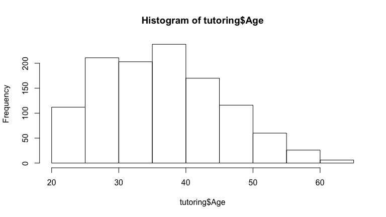
Boxplots
boxplot(tutoring$Age)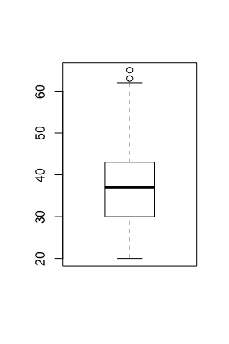
boxplot(Age ~ Military, data=tutoring)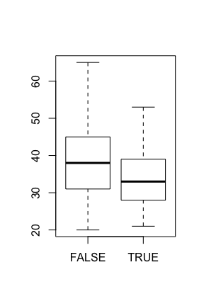
Barplots
barplot(table(tutoring$Ethnicity))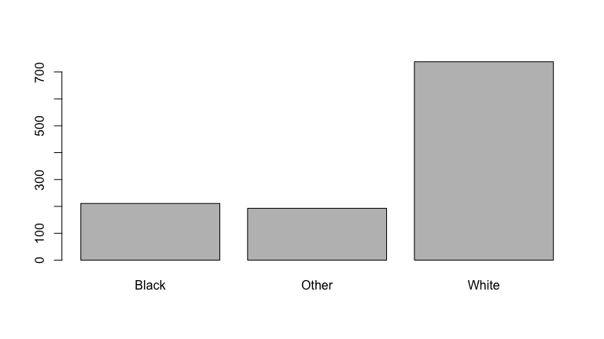
Scatter Plots
plot(ret2$SATMath, ret2$FullTimeRetentionRate)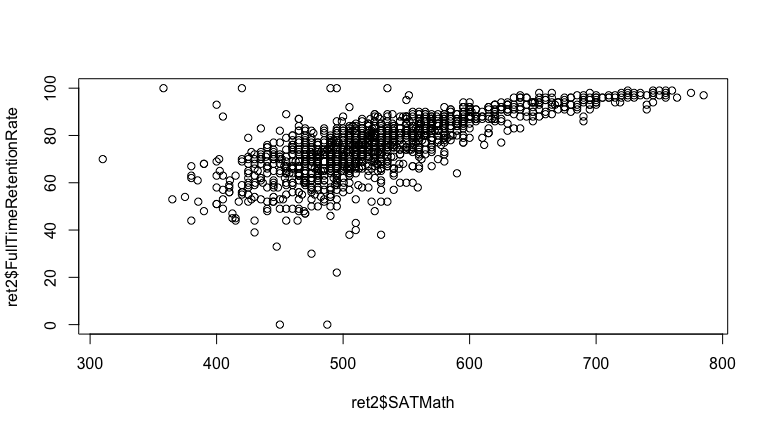
Gammar of Graphics with ggplot2
ggplot2is an R package that provides an alternative framework based upon Wilkinson’s (2005) Grammar of Graphics.ggplot2is, in general, more flexible for creating "prettier" and complex plots.- Works by creating layers of different types of objects/geometries (i.e. bars, points, lines, polygons, etc.)
ggplot2has at least three ways of creating plots:qplotggplot(...) + geom_XXX(...) + ...ggplot(...) + layer(...)
- We will focus only on the second.
First Example
data(diamonds) ggplot(diamonds, aes(x=carat, y=price, color=cut)) + geom_point()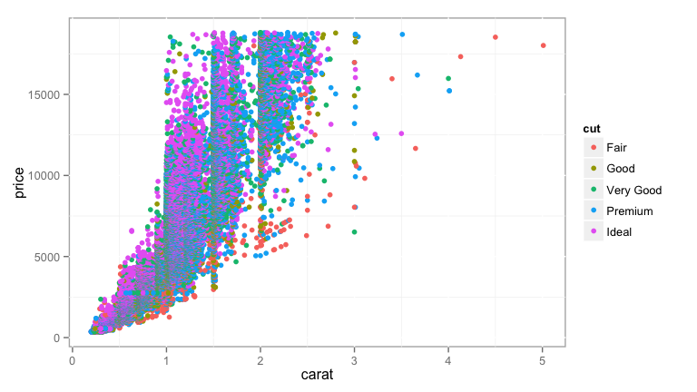
Parts of a ggplot2 Statement
- Data
ggplot(myDataFrame, aes(x=x, y=y) - Layers
geom_point(),geom_histogram() - Facets
facet_wrap(~ cut),facet_grid(~ cut) - Scales
scale_y_log10() - Other options
ggtitle('my title'),ylim(c(0, 10000)),xlab('x-axis label')
Lots of geoms
ls('package:ggplot2')[grep('geom_', ls('package:ggplot2'))]
## [1] "geom_abline" "geom_area" "geom_bar" "geom_bin2d" ## [5] "geom_blank" "geom_boxplot" "geom_contour" "geom_crossbar" ## [9] "geom_density" "geom_density2d" "geom_dotplot" "geom_errorbar" ## [13] "geom_errorbarh" "geom_freqpoly" "geom_hex" "geom_histogram" ## [17] "geom_hline" "geom_jitter" "geom_line" "geom_linerange" ## [21] "geom_map" "geom_path" "geom_point" "geom_pointrange" ## [25] "geom_polygon" "geom_quantile" "geom_raster" "geom_rect" ## [29] "geom_ribbon" "geom_rug" "geom_segment" "geom_smooth" ## [33] "geom_step" "geom_text" "geom_tile" "geom_violin" ## [37] "geom_vline" "update_geom_defaults"
Histograms
ggplot(tutoring, aes(x=Age)) + geom_histogram(binwidth=5)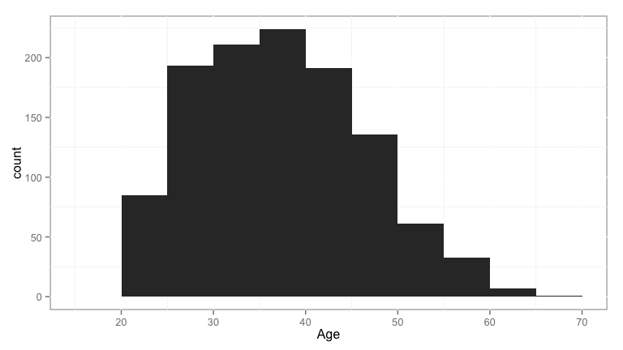
Density Plots
ggplot(tutoring, aes(x=Age)) + geom_density()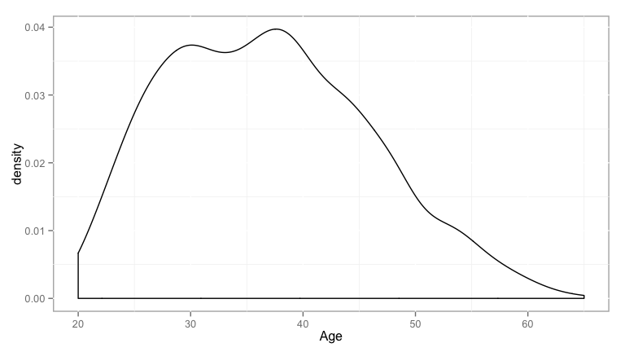
Boxplots
ggplot(tutoring, aes(x=Military, y=Age)) + geom_boxplot()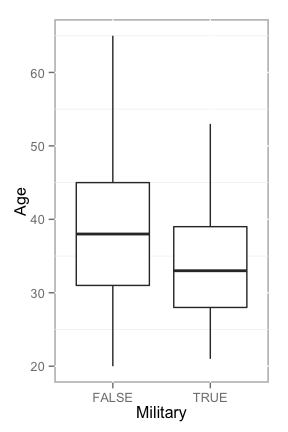
Barplots
ggplot(tutoring, aes(x=Ethnicity)) + geom_bar()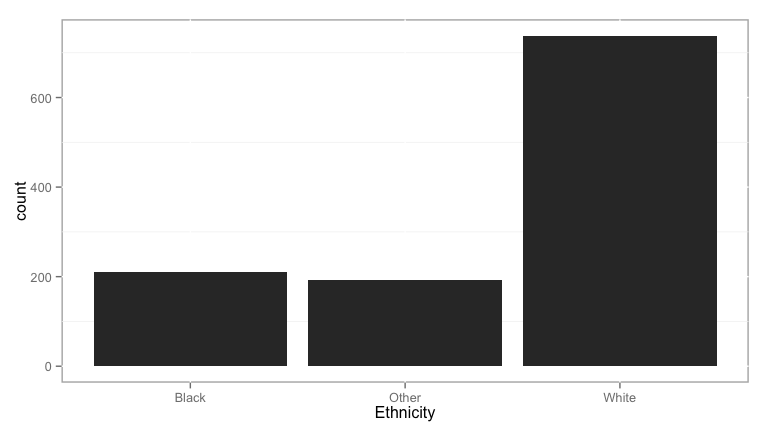
Example: SAT and First Year Retention
First, we define the data and aesthetics (i.e. the various components for the graph). Here, SAT math scores will be on the x-axis, full-time retention rates on the y-axis. Points will be sized based upon the number of SAT scores included. The color will represent whether admission test scores are required, recommended, or neither required nor recommended.
p <- ggplot(ret2, aes(x=SATMath, y=FullTimeRetentionRate, size=NumSATScores,
color=UseAdmissionTestScores))
Next, we define the graphic objects (i.e. geoms) to add to the figure.
p <- p + geom_point()
We can override the default color scheme for the points (note the default is scale_color_hue).
p <- p + scale_color_brewer('Test Required for Admissions', type='qual')
Lastly, we will add axis labels and a title.
p <- p + xlab('SAT Math Score') + ylab('Full Time Retention Rate') +
ggtitle('SAT and Full Time Retention')
Example: SAT and First Year Retention
Example: SAT and First Year Retention
We can easily add additional geoms, here adding a Loess regression line.
p + geom_smooth(method='loess')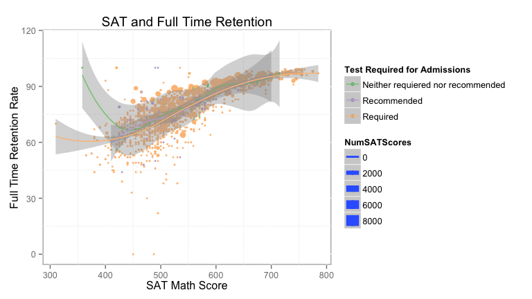
Likert Type Items
library(likert) l <- likert(mass[,2:15]) summary(l)
## Item low neutral ## 3 I think that I will use math in the future. 1.754386 19.29825 ## 8 I find math challenging. 11.864407 20.33898 ## 5 Math relates to my life. 20.338983 18.64407 ## 1 I find math interesting. 25.423729 16.94915 ## 13 I enjoy learning with mathematics. 32.203390 22.03390 ## 2 I get uptight during math tests. 30.508475 28.81356 ## 10 I would like to take more math classes. 33.898305 27.11864 ## 14 Mathematics makes me feel confused. 37.288136 23.72881 ## 6 I worry about my ability to solve math problems. 42.372881 22.03390 ## 11 Mathematics makes me feel uneasy. 41.379310 25.86207 ## 9 Mathematics makes me feel nervous. 45.762712 22.03390 ## 7 I get a sinking feeling when I try to do math problems. 47.457627 27.11864 ## 12 Math is one of my favorite subjects. 54.237288 20.33898 ## 4 Mind goes blank and I am unable to think clearly when doing my math test. 54.237288 22.03390 ## high mean sd ## 3 78.94737 4.315789 0.9094326 ## 8 67.79661 3.694915 0.9145234 ## 5 61.01695 3.627119 1.1431702 ## 1 57.62712 3.406780 1.2881241 ## 13 45.76271 3.135593 1.2241482 ## 2 40.67797 3.152542 1.1717002 ## 10 38.98305 3.033898 1.2726039 ## 14 38.98305 2.966102 1.2029576 ## 6 35.59322 2.847458 1.1568918 ## 11 32.75862 2.793103 1.1811178 ## 9 32.20339 2.813559 1.2383885 ## 7 25.42373 2.644068 1.1561337 ## 12 25.42373 2.559322 1.3034594 ## 4 23.72881 2.576271 1.1774225
Likert Bar Plot
plot(l)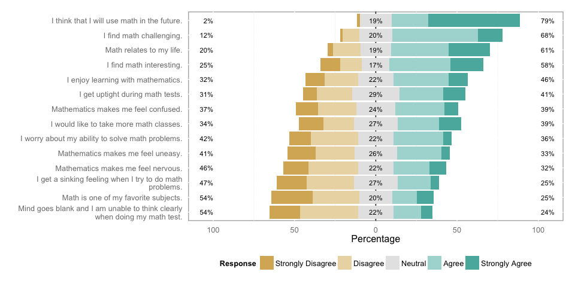
Likert Bar Plot
plot(l, include.histogram=TRUE)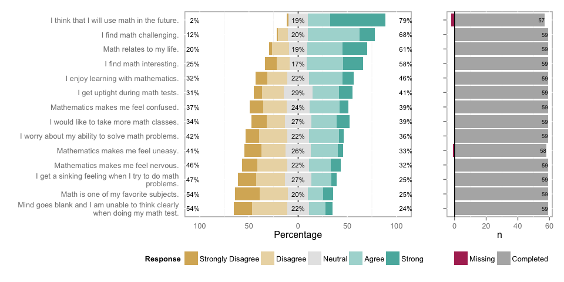
Likert Heat Plot
plot(l, type='heat')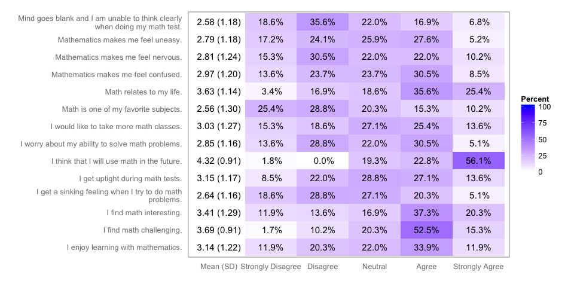
Likert Density Plot {.flexbox vcenter}
plot(likert(mass[,2:6]), type='density')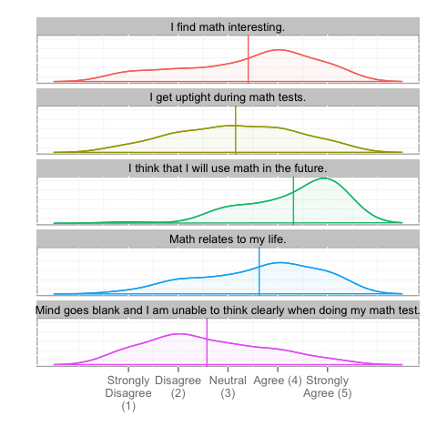
Grouped Likert Analysis
lg <- likert(mass[,2:6], grouping = mass$Gender) summary(lg)
## Group Item low ## 1 Female I find math interesting. 27.272727 ## 2 Female I get uptight during math tests. 27.272727 ## 3 Female I think that I will use math in the future. 26.190476 ## 4 Female Mind goes blank and I am unable to think clearly when doing my math test. 47.727273 ## 5 Female Math relates to my life. 27.272727 ## 6 Male I find math interesting. 20.000000 ## 7 Male I get uptight during math tests. 40.000000 ## 8 Male I think that I will use math in the future. 6.666667 ## 9 Male Mind goes blank and I am unable to think clearly when doing my math test. 73.333333 ## 10 Male Math relates to my life. 0.000000 ## neutral high mean sd ## 1 22.72727 50.00000 3.204545 1.2864146 ## 2 22.72727 50.00000 3.363636 1.1632135 ## 3 23.80952 50.00000 4.190476 0.9687330 ## 4 25.00000 27.27273 2.772727 1.1586607 ## 5 20.45455 52.27273 3.409091 1.1874965 ## 6 0.00000 80.00000 4.000000 1.1338934 ## 7 46.66667 13.33333 2.533333 0.9904304 ## 8 20.00000 73.33333 4.666667 0.6172134 ## 9 13.33333 13.33333 2.000000 1.0690450 ## 10 13.33333 86.66667 4.266667 0.7037316
Grouped Likert Bar Plot
plot(lg)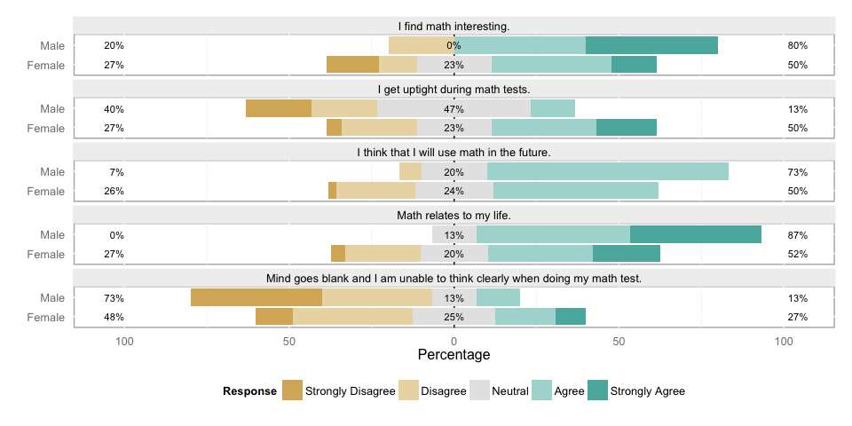
Pairs Plot
pairs(mass[,2:6], panel=panel.smooth, diag.panel=panel.hist, upper.panel=panel.cor)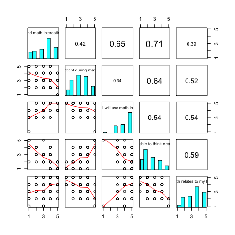
Document Preparation
Markdown
Markdown is a plan text format designed primarily to be converted to HTML documents. However, with the development of Pandoc, markdown has become popular for generating lots of other document formats including PDF, Word, and presentations (this presentation is, in fact, written in markdown).
The goal of markdown is for the source file (in plain text) to be readable without converting to the desired output format.
# Level 1 Header ## Level 2 Header ### Level 3 Header #### Level 4 Header ##### Level 5 Header
One asterisk around a word or phrase will put it in italics, two will make it bold.
Images
Links
See https://daringfireball.net/projects/markdown/ for more on Markdown.
R Markdown
R markdown extends markdown by allowing for embedding R code and output directly within your document.
```{r Label, options}
2 + 2
```
R code can also be included inline by placing commands between ` r and ` (note: not space between the opening tickmark and r).
A total of ` r nrow(mass)` students responded to the survey.
A total of 59 students responded to the survey.
See https://www.rstudio.com/wp-content/uploads/2015/02/rmarkdown-cheatsheet.pdf for a cheat sheet on markdown and R markdown.
Chunk Options
eval(TRUEorFALSE) - whether the chunk is executed.echo(TRUEorFALSE) - whether the source code is copied into the final document.message(TRUEorFALSE) - whether messages are included in the final document.warning(TRUEorFALSE) - whether warning messages are included in the final document.results(asis,hide) - how the output should be included.fig.width- the width of any figures from the code chunk.fig.height- the height of any figures from the code chunk.cache- whether the R chunk should be cached and only updated if changed. Useful if the chunk takes a significant amount of time to run.
Tables
library(knitr)
tab <- describeBy(tutoring$Grade, group=tutoring$treat, mat=TRUE, skew=FALSE)
tab <- tab[,c('group1', 'n', 'mean', 'sd', 'median')]
names(tab) <- c('Treatment', 'n', 'Mean', 'Standard Deviation', 'Median')
kable(tab, row.names=FALSE, digits=3, caption='Descriptive Statistics for Grade by Treatment')
| Treatment | n | Mean | Standard Deviation | Median |
|---|---|---|---|---|
| Control | 918 | 2.791 | 1.543 | 3 |
| Treat1 | 134 | 3.179 | 1.003 | 3 |
| Treat2 | 90 | 3.489 | 0.824 | 4 |
Math Equations

R Markdown uses MathJax to display math equations. MathJax is an open source JavaScript library that converts LaTeX style equations to HTML. Thanks to Daum Equation Editor available as a Google Chrome Extension or as a Mac Application, creating equations is relatively simply using a graphical user interface. Math equations are surrounded by one dollar sign for inline equations or two dollar signs for centered equations.
```
$$ { e }^{ i\pi }+1=0 $$
```
\[ { e }^{ i\pi }+1=0 \]
Advanced Statistics and Predictive Modeling
Affairs Data
library(AER) library(party) library(randomForest) library(ROCR) data(Affairs) str(Affairs)
## 'data.frame': 601 obs. of 9 variables: ## $ affairs : num 0 0 0 0 0 0 0 0 0 0 ... ## $ gender : Factor w/ 2 levels "female","male": 2 1 1 2 2 1 1 2 1 2 ... ## $ age : num 37 27 32 57 22 32 22 57 32 22 ... ## $ yearsmarried : num 10 4 15 15 0.75 1.5 0.75 15 15 1.5 ... ## $ children : Factor w/ 2 levels "no","yes": 1 1 2 2 1 1 1 2 2 1 ... ## $ religiousness: int 3 4 1 5 2 2 2 2 4 4 ... ## $ education : num 18 14 12 18 17 17 12 14 16 14 ... ## $ occupation : int 7 6 1 6 6 5 1 4 1 4 ... ## $ rating : int 4 4 4 5 3 5 3 4 2 5 ...
Fair, R.C. (1978). A Theory of Extramarital Affairs. Journal of Political Economy, 86, 45–61.
Affairs Data (cont.)
- affairs - How often engaged in extramarital sexual intercourse during the past year?
- gender - factor indicating gender.
- age - numeric variable coding age in years: 17.5 = under 20, 22 = 20–24, 27 = 25–29, 32 = 30–34, 37 = 35–39, 42 = 40–44, 47 = 45–49, 52 = 50–54, 57 = 55 or over.
- yearsmarried - numeric variable coding number of years married: 0.125 = 3 months or less, 0.417 = 4–6 months, 0.75 = 6 months–1 year, 1.5 = 1–2 years, 4 = 3–5 years, 7 = 6–8 years, 10 = 9–11 years, 15 = 12 or more years.
- children - Are there children in the marriage?
- religiousness - numeric variable coding religiousness: 1 = anti, 2 = not at all, 3 = slightly, 4 = somewhat, 5 = very.
- education - numeric variable coding level of education: 9 = grade school, 12 = high school graduate, 14 = some college, 16 = college graduate, 17 = some graduate work, 18 = master's degree, 20 = Ph.D., M.D., or other advanced degree.
- occupation - numeric variable coding occupation according to Hollingshead classification (reverse numbering).
- rating - numeric variable coding self rating of marriage: 1 = very unhappy, 2 = somewhat unhappy, 3 = average, 4 = happier than average, 5 = very happy.
Data and Model Preparation
Affairs$HadAffair <- Affairs$affairs > 0
train <- sample(nrow(Affairs), nrow(Affairs) / 2)
affairs.train <- Affairs[train,]
affairs.valid <- Affairs[-train,]
formu <- HadAffair ~ gender + age + yearsmarried + children +
religiousness + education + occupation + rating
Logsitic Regression
lr.out <- glm(formu, data=affairs.train, family=binomial()) summary(lr.out)
## ## Call: ## glm(formula = formu, family = binomial(), data = affairs.train) ## ## Deviance Residuals: ## Min 1Q Median 3Q Max ## -1.3925 -0.7357 -0.5349 -0.2834 2.4298 ## ## Coefficients: ## Estimate Std. Error z value Pr(>|z|) ## (Intercept) 2.92232 1.33559 2.188 0.028667 * ## gendermale 0.66772 0.34642 1.927 0.053921 . ## age -0.06547 0.02727 -2.401 0.016357 * ## yearsmarried 0.16926 0.04767 3.551 0.000384 *** ## childrenyes -0.48637 0.41742 -1.165 0.243947 ## religiousness -0.38367 0.13195 -2.908 0.003641 ** ## education -0.03138 0.07568 -0.415 0.678352 ## occupation 0.01380 0.10675 0.129 0.897153 ## rating -0.46011 0.13374 -3.440 0.000581 *** ## --- ## Signif. codes: 0 '***' 0.001 '**' 0.01 '*' 0.05 '.' 0.1 ' ' 1 ## ## (Dispersion parameter for binomial family taken to be 1) ## ## Null deviance: 335.19 on 299 degrees of freedom ## Residual deviance: 296.05 on 291 degrees of freedom ## AIC: 314.05 ## ## Number of Fisher Scoring iterations: 4
train.out <- fitted(lr.out) head(train.out)
## 645 1685 9012 1726 735 1573 ## 0.2606440 0.2716928 0.5508259 0.1885330 0.4659040 0.1670437
valid.out <- predict(lr.out, newdata=affairs.valid, type='response') head(valid.out)
## 5 23 44 45 50 64 ## 0.1300914 0.4202230 0.2887123 0.2532270 0.7313187 0.1618834
Receiver Operating Characteristic (ROC) Curve
pred <- prediction(valid.out, affairs.valid$HadAffair) perf <- performance(pred, measure = "tpr", x.measure = "fpr") plot(perf, col=rainbow(10)); abline(0, 1)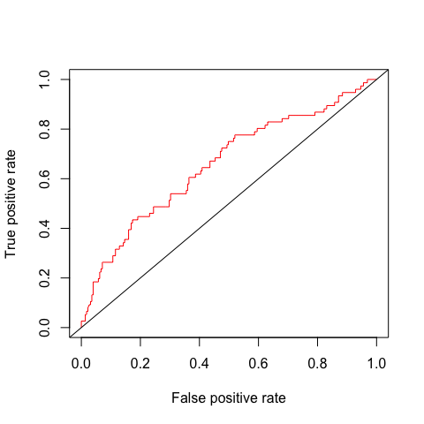
Confusion matrix and model accuracy
table('Prediction'=valid.out > median(valid.out), 'Actual'=affairs.valid$HadAffair) %>%
print %>% prop.table %>% diag %>% sum %>% print
## Actual ## Prediction FALSE TRUE ## FALSE 126 25 ## TRUE 99 51 ## [1] 0.5880399
Decision Trees
library(rpart) rpart.out <- rpart(formu, data=affairs.train) plot(rpart.out); text(rpart.out)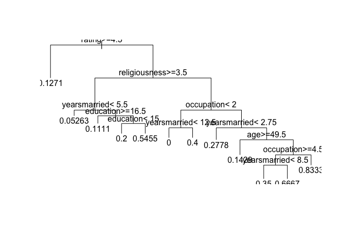
Decision Trees (cont.)
valid.out <- predict(rpart.out, newdata=affairs.valid)
table('Prediction'=valid.out > median(valid.out), 'Actual'=affairs.valid$HadAffair) %>%
print %>% prop.table %>% diag %>% sum %>% print
## Actual ## Prediction FALSE TRUE ## FALSE 141 28 ## TRUE 84 48 ## [1] 0.627907
Random Forests
formu2 <- update(formu, factor(HadAffair) ~ .)
library(randomForest)
rf.out <- randomForest(formu2, data=affairs.train)
valid.out.rf <- predict(rf.out, newdata=affairs.valid)
table('Prediction'=valid.out.rf, 'Actual'=affairs.valid$HadAffair) %>%
print %>% prop.table %>% diag %>% sum %>% print
## Actual ## Prediction FALSE TRUE ## FALSE 203 62 ## TRUE 22 14 ## [1] 0.7209302
Interactive Documents
Shiny
Shiny is an R package that provides a framework for creating interactive, web based, applications.
Tutorial and CheatSheet
ui.R
shinyUI(pageWithSidebar(
headerPanel("Gambler's Run"), # Application title
sidebarPanel(
helpText(paste0("Selection the number of games to play (x axis), ",
"the odds of winning, and the number of runs ",
"(i.e. number of lines).")),
sliderInput("games", "Number of games:", min=2, max=1000, value=100),
sliderInput("odds", "Odds of winning (1:n):", min=2, max=12, value=2),
sliderInput("runs", "Number of runs:", min=1, max=20, value=1),
br(), actionButton('reload.data','Start Over')
),
mainPanel(
tabsetPanel(
tabPanel("Plot", h3(textOutput("results")), plotOutput("plot")),
tabPanel("Table", tableOutput("table"))
)
)
))
server.R
shinyServer(function(input, output) {
data <- reactive({
if(input$reload.data > 0 | TRUE) {
data <- data.frame(x=integer(), y=integer(), run=integer())
for(i in seq_len(input$runs)) {
vals <- sample(input$odds, input$games, replace=TRUE)
vals <- ifelse(vals==1, 1, -1)
data <- rbind(data, data.frame(x = 1:length(vals), y = cumsum(vals),
run = rep(i, length(vals)) ) )
}
return(data)
}
})
output$table <- renderTable({ data() })
output$plot <- renderPlot({
mydata <- data()
range <- c( -max(abs(mydata$y)), max(abs(mydata$y)))
ggplot(mydata, aes(x=x, y=y, color=run, group=run)) + geom_hline(yintercept=0, colour='blue') +
geom_line() + ylim(range) + ylab('Cumulative Sum') + xlab('x') + theme(legend.position='none')
}, height=400)
output$results <- renderText({
mydata <- data()
total <- mean(mydata[mydata$x == max(mydata$x),'y'])
return(paste0('Average ', ifelse(total < 0, 'losses', 'winnings'), ' after ',
input$games, ' games is ', prettyNum(abs(total), digits=1)))
})
})
UI Inputs
actionButton- Action ButtoncheckboxGroupInput- A group of check boxescheckboxInput- A single check boxdateInput- A calendar to aid date selectiondateRangeInput- A pair of calendars for selecting a date rangefileInput- A file upload control wizardhelpText- Help text that can be added to an input formnumericInput- A field to enter numbersradioButtons- A set of radio buttonsselectInput- A box with choices to select fromsliderInput- A slider barsubmitButton- A submit buttontextInput- A field to enter text
Gambler Demo
shiny::runGitHub('ShinyApps', 'jbryer', subdir='gambler')
Conclusions
Additional Resources
- R Bloggers
- Quick-R and R in Action Book
- The Art of R Programming
- Hadley Wickham's books and websites: R Packages, Advanced R, ggplot2
- The R Journal
- Journal of Statistical Software
- RStudio Cheat Sheets, webinars, and online learning
- OpenIntro An open sourse introductory statistics textbook that make extensive use of R.
- IS606 Statistics and Probability course I teach online. Most materials are available on my Github page.
Thank You!
Jason Bryer, Ph.D. jbryer@excelsior.edu, www.bryer.org
Kim Speerschneider kspeerschneider@excelsior.edu
Workshop Materials: github.com/jbryer/IntroR